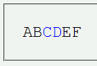
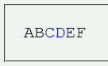

fontプロパティでフォント関連の指定を一括して行うと、フォントファミリの指定だけが子孫要素に継承されない。
<p style="font:1.5em 'Courier New',monospace;">AB<span style="color:blue;">CD</span>EF</p>
ABCDEF
p要素はCourier Newまたは既定の等幅フォントで表示します。この指定はspan要素にも継承されます。
N6.2.3での表示（標準モード）
Moz1.0での表示（標準モード）
Moz1.0およびN6.2.3ではフォントファミリの指定も継承されました。